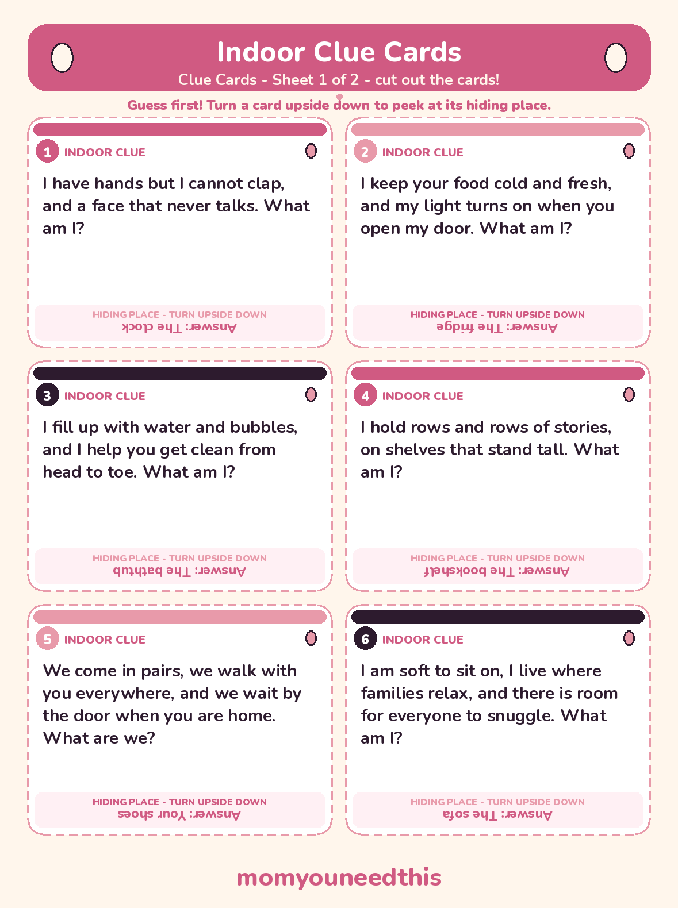
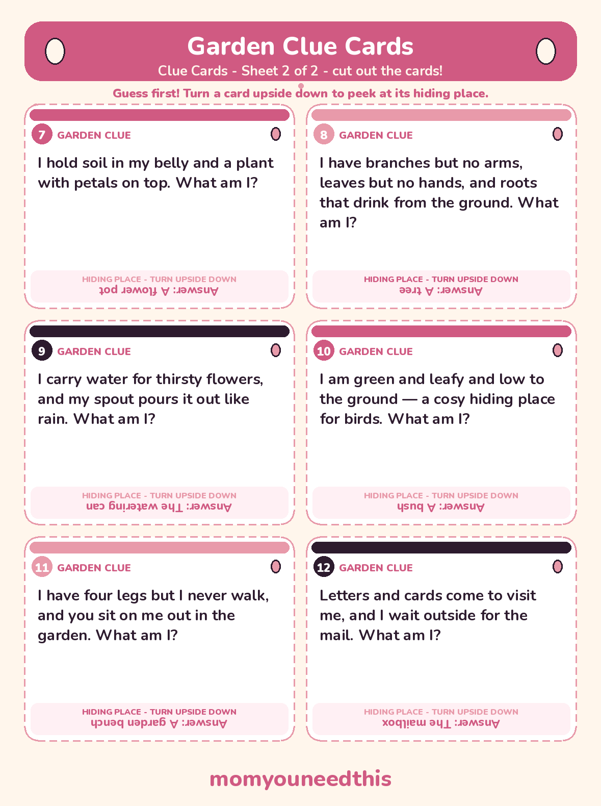
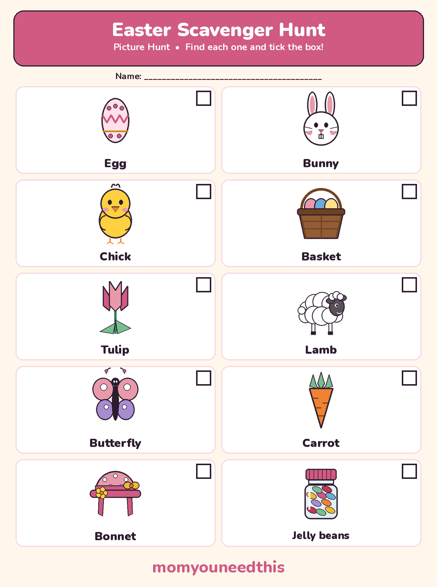

Easter Scavenger Hunt Riddle Clues, Printable Clue Cards & a Picture Hunt for Little Kids
A free easter scavenger hunt led by riddles: 12 clues hide eggs around your home and garden, each answer pointing to the next hiding place. Print the clue cards for readers, or use the picture checklist for little hunters who cannot read yet. No signup.
Last updated: October 25, 2026
Quick Answer
This easter scavenger hunt runs on riddle clues: solve one clue, find the egg hiding there, and the next clue is waiting with it. There are 12 clues for indoor and garden hunts, printable clue cards, and a picture hunt for little kids who cannot read yet.
At a Glance
- Clues: 12 riddle clues — 6 indoor, 6 garden
- Printables: 3 sheets — 2 clue card sheets (12 cards) + 1 picture hunt sheet (10 finds)
- Ages: 2+ picture hunt with an adult; 4+ riddle hunt with an adult reader
- Eggs: 12 clue eggs + 1 golden egg for the finale
- You need: A printer, scissors, eggs and a basket each
- Cost: Free — print at home
🥚 Easter Riddles for Scavenger Hunt — Indoor Clues
Six clues that hide eggs inside the house. Read a clue out loud, let everyone guess, then run to the hiding place — the answer is printed small and pink under each riddle, so the guess always comes first.
Here is how the trail works: the answer to each clue is the hiding place of the next egg. Hand your hunters clue 1, hide an egg at the clock with clue 2 tucked inside it or taped underneath, and keep going until the last egg. Every hiding place here is an ordinary thing in an ordinary home — no clue needs a special prop.
I have hands but I cannot clap, and a face that never talks. What am I? Answer: The clock.
I keep your food cold and fresh, and my light turns on when you open my door. What am I? Answer: The fridge.
I fill up with water and bubbles, and I help you get clean from head to toe. What am I? Answer: The bathtub.
I hold rows and rows of stories, on shelves that stand tall. What am I? Answer: The bookshelf.
We come in pairs, we walk with you everywhere, and we wait by the door when you are home. What are we? Answer: Your shoes.
I am soft to sit on, I live where families relax, and there is room for everyone to snuggle. What am I? Answer: The sofa.
🌷 Garden Clues for Your Easter Egg Scavenger Hunt
Six more clues for outside — the same game in the fresh air, with hiding places a garden, yard or balcony already has.
Walk the garden once before you hide anything (the safety section below says what to check), then hide the garden eggs in clue order, just like indoors. A mixed hunt works beautifully too: start with the indoor clues, let the shoe clue by the front door lead everyone outside, and finish with the garden set.
I hold soil in my belly and a plant with petals on top. What am I? Answer: A flower pot.
I have branches but no arms, leaves but no hands, and roots that drink from the ground. What am I? Answer: A tree.
I carry water for thirsty flowers, and my spout pours it out like rain. What am I? Answer: The watering can.
I am green and leafy and low to the ground — a cosy hiding place for birds. What am I? Answer: A bush.
I have four legs but I never walk, and you sit on me out in the garden. What am I? Answer: A garden bench.
Letters and cards come to visit me, and I wait outside for the mail. What am I? Answer: The mailbox.
✂️ The Printable Clue Cards
All 12 riddles on this page are also cut-out cards — six indoor clues on sheet 1 and six garden clues on sheet 2, numbered 1 to 12 so the hunt route stays in order. On every card the hiding place is printed small and upside down at the bottom, so hunters have to commit to a guess before anyone peeks. Print both sheets, cut along the dashed lines, and tuck each card inside the egg before it.

✂️ Download Your Free Clue Cards — Indoor Clues
6 indoor riddle clue cards, numbered 1 to 6 — sheet 1 of 2.
⬇️ Download Free Clue Cards 🖨️ Print🎁 Free printable for ages 4+, with an adult reader

✂️ Download Your Free Clue Cards — Garden Clues
6 garden riddle clue cards, numbered 7 to 12 — sheet 2 of 2.
⬇️ Download Free Clue Cards 🖨️ Print🎁 Free printable for ages 4+, with an adult reader
🐤 The Picture Hunt for Little Kids Who Can't Read Yet
No reading, no clues, no waiting for a big sibling to finish — just 10 Easter things to find, point at and tick off.
The picture sheet holds 10 Easter finds: an egg, a bunny, a chick, a basket, a tulip, a lamb, a butterfly, a carrot, a bonnet and a jar of jelly beans. Set them up before the hunt — real ones where you have them (a real tulip, a real basket, a carrot from the fridge), and toy, picture-book or decoration versions for the rest (a toy lamb, a bunny soft toy, a butterfly picture). Your little hunter carries the sheet, spots each one, and ticks its empty box.
Little hunters hunt with an adult. Read the word under each picture out loud, let your child do the finding and the ticking, and count a point and a shout as a find for anything up high. Ten proud ticks is a complete hunt at this age — and it runs happily alongside the big kids' riddle hunt, in the same rooms at the same time.

✂️ Download Your Free Picture Hunt
10 Easter pictures to find and tick — made for kids who cannot read yet.
⬇️ Download Free Picture Hunt 🖨️ Print🎁 Free printable for ages 2–5, with an adult
💡 Easter Scavenger Hunt Ideas to Make It Your Own
The 12 clues are the backbone — these easter scavenger hunt ideas are the twists families add once the first hunt is over and everyone wants another round.
🌟 The golden egg finale.
Wrap one egg in gold foil (or use a gold plastic egg) and hide it at the very last hiding place, holding a slightly bigger prize — a sticker book, a small toy, or the right to choose tonight's dessert. Every clue suddenly feels like it is leading somewhere important.
🎨 One colour at a time.
Call a colour before each round — "only pink eggs count this time!" Younger hunters who cannot follow riddles yet can still race to spot their colour while the readers work the clues.
🤝 Team baskets.
Pair a reader with a non-reader on each team: the reader solves the clue, the little teammate carries the basket and does the finding. Both jobs matter, and mixed ages stop being a problem.
🔁 Reverse hunt.
After the main hunt, the kids hide six eggs for the adults, who have to find them against the clock. Being the hider is the prize every child actually wants.
🌱 Ages, Safety & Treats
A hunt that runs well for a 2-year-old and a 9-year-old at the same time — and the two safety checks that make it possible.
Ages. Toddlers (2–3) play the picture hunt with an adult, at walking pace, in one or two rooms. Ages 4–5 love the riddle hunt with an adult reading the clues aloud and dropping hints. Confident readers (about 6+) can be handed the card stack and run the whole route themselves — and older kids who find the clues easy become excellent clue-readers and egg-hiders for the younger ones.
Garden safety, before you hide a single egg: walk the whole hunting area first. Move garden tools, sharp-edged stones and anything breakable or unsafe out of the way, check for thorny bushes, slippery patches and anything a running child could trip on, keep gates closed, and declare ponds, sheds and flower beds you want left alone as out of bounds. Hide eggs where small hands can reach without climbing.
Treats and tiny hunters. Small chocolate eggs and mini eggs are a choking risk for children under 3, so for toddlers skip the small chocolate altogether: use big plastic eggs filled with non-food treats instead — stickers are the classic — or leave the eggs empty and trade each found egg for a treat an adult hands over at the end. Whatever the filling, an adult opens eggs with little kids, and all hunting treats get eaten sitting down, after the hunt.
💝 Why a Riddle Hunt Works
A plain egg hunt is over in four minutes of grabbing. A riddle hunt slows the finding down into thinking: each clue has to be listened to, pictured and tested against the house before anyone runs anywhere. That pause is where the game lives — and why the same 12 eggs can fill a whole morning. It is also reading and reasoning practice in disguise: clues turn on double meanings (hands that cannot clap, legs that never walk), and a child who cracks one has done real comprehension work without noticing.
🖨️ How to Run Your Hunt
- Choose your route. Indoor clues (1–6), garden clues (7–12), or all 12 mixed into one long hunt. The cards are numbered, and the clue order is the hunt route — clue 1 always starts the trail.
- Count out your eggs. You need one egg per clue — 12 for the full hunt — plus one golden egg for the finale if you are using it. Fill the eggs before you hide anything, and tuck the next clue card inside each egg (or tape it underneath).
- Hide the eggs in clue order. The egg at the clock carries clue 2, the egg at the fridge carries clue 3, and so on. The last egg on the route holds the golden egg's hiding place — or is the golden egg itself.
- Agree the one-basket rule. Every hunter carries one basket, and only eggs you found yourself go in it — no taking eggs from someone else's basket, and found eggs stay in the basket until the final count. It keeps fast hunters honest and slow hunters in the game.
- Start little hunters on the picture sheet. Hand toddlers the picture hunt and an adult hunting partner, and let them run their own hunt in the same rooms while the readers follow the clues.
- Finish together. Count the baskets out loud, open the golden egg last, and let the finder of the golden egg choose the victory snack. A hunt that ends together gets asked for again next Easter.
🐺 More Hunts & Games for Moms & Kids
🎄 Christmas Scavenger Hunt
A printable picture hunt and big-kid checklist for the Christmas season. Start the Christmas hunt.
🧩 Riddles for Kids
68 riddles with answers, plus printable riddle cards for the car and the dinner table. Read the riddles.
🏠 Indoor Scavenger Hunt
A rainy-day hunt you can run in any house, any season. Start the indoor hunt.
🌿 Nature Scavenger Hunt
Take the hunting outside: things to spot on a walk or in the park. Start the nature hunt.
🎨 Free Coloring Pages
Hundreds of free coloring sheets to print for every age. See the coloring pages.
❓ Easter Scavenger Hunt FAQ
What age is this easter scavenger hunt for?
The picture hunt suits ages 2 to 5, hunting with an adult. The riddle clues suit ages 4 and up when an adult reads the clues aloud, and confident readers of about 6 and up can run the hunt on their own, indoors or in the garden.
Can I use these as easter riddles for scavenger hunt games at home?
Yes — that is exactly what they are made for. Pick the indoor clues, the garden clues, or mix all 12 into one route. Each answer names the hiding place for the next egg, and the printable cards below are the same riddles, ready to cut out.
Are the easter egg scavenger hunt clues free to print?
Yes — all 12 clues are on two free printable clue card sheets, and the picture hunt sheet is free too. Print at home with no signup, as many sets as you need for your hunters.
How many eggs do I need for an easter scavenger hunt?
Twelve eggs — one hidden at each clue's hiding place, with the next clue tucked inside or taped underneath. Add one extra golden egg as the finale prize at the very last hiding place if you like, for 13 eggs in total.
What can little kids who cannot read yet use instead of clues?
The printable picture hunt on this page: 10 Easter pictures — egg, bunny, chick, basket, tulip, lamb, butterfly, carrot, bonnet and a jar of jelly beans — to spot around the house and garden, with an empty box to tick for each find. Hunt alongside an adult and let the ticking be the little hunter's job.
Is a garden hunt safe for toddlers?
Yes, with a quick check first: walk the garden before you hide anything and move sharp tools, stones and anything unsafe out of the way, and keep gates closed. For children under 3, skip small chocolate eggs, which are a choking risk — use big plastic eggs filled with stickers or other non-food treats instead, and hunt together.